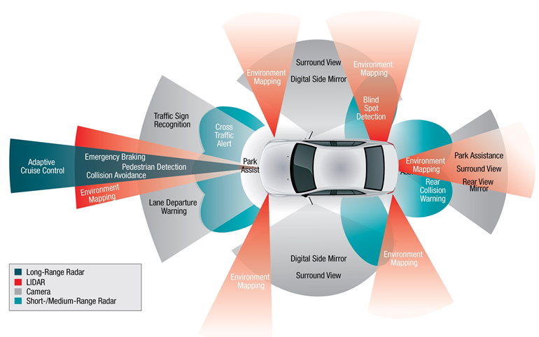

Blockchain and Cryptocurrencies
What are blockchains and cryptocurrencies?
In simple terms, cryptocurrencies are a decentralised digital or virtual currency that is based on a large network distributed across
several computers. The most popular or widely known cryptocurrencies are bitcoin and Ethereum. However, there are more than 5000 different
types of cryptocurrencies.
Cryptocurrencies run on blockchain, allowing them to be immune to counterfeiting and are heavily protected by strong and complex algorithms.
Blockchain can be simplified as a publicly open collection of records. Due to crypto’s being decentralised, this allows them to exist outside
of the control of governments or authorities.
What does it do?
Like regular fiat currency, cryptocurrencies can be used to purchase goods and services. However, it is much more difficult as some are more popular
than others, with each ranging from different fees or gas prices. Currently, bitcoin has a bad reputation since it is widely known for being used for criminal
activity, especially on the dark web. This is because transactions are impossible to track, making them ideal for online payments. As aforementioned, there are
thousands of cryptocurrencies, with all having different use cases, technological advancements, and goals. For instance, as of now, bitcoin is primarily a store of
value (digital gold) coin, whereas something like Cardano (ADA) is a proof of stake coin, allowing users to delegate their stored ADA to a stake pool to earn
rewards (passive income).
In the near future, cryptocurrencies such as Cardano may be widely adopted. Cardano’s alliance with Africa aims to transform the entire continent into a single digital
market. This will allow new industries to bloom and create many opportunities within the African economy.
Another example of what cryptocurrencies can achieve in the future is Vechain. Vechain’s primary goal is to improve supply chain management. Its goal is to streamline
business processes and information flow for complex supply chains through the use of a distributed ledger. Vechain utilises an internet-of-things token layer to allow
tracking of assets on the blockchain, alongside this, a smart contract layer to track who owns the asset. Many companies such as BMW, Renault, Yida and many more, have
partnered with Vechain and as of now, when manufacturing occurs worldwide and not centrally, tracking products is of great importance. Vechain allows for the tracking
and authentication of assets or products, eliminating counterfeiting or fraud. Thus far, Vechain is in the works of being implemented in the health and food industry.
An example would be the Mediterranean Hospital of Cyprus storing the first 100 COVID-19 vaccine records on the Vechain public blockchain.
What is it likely to impact?
Cryptocurrencies will slowly be adopted. This is already happening with big companies such as Microsoft, Dell and Tesla, which are now accepting cryptocurrencies as a
form of payment. The increasing adoption of cryptos could lead to a new line of professions. With the growing technology, there will be a need for more crypto related jobs,
such as blockchain builders, programmers, or even smart contract developers.
The technology industry will definitely be impacted positively with the adoption of cryptocurrencies. Blockchain technology and crypto’s such as Vechain will offer tech
companies cheaper and faster ways to transfer funds, execute agreements through smart contract and track assets throughout production. All this can be achieved without the
need of a middleman such as banks or other financial institutions.
One major impact cryptocurrency have is the reduced risk of fraud. In terms of money, there is always a risk for fraud, whether it be counterfeiting cash, fund transfer or
even using a credit or debit card on an insecure site. Cryptos rectifies this issue since they are not associated to a government or banks and are transferred electronically
and securely on the blockchain.
Another impact cryptocurrencies have on the world is that they offer a stable alternative to unstable fiat currencies. Not all countries are subject to outrageous rates of
inflation but some countries such as North Korea and Indonesia have extremely volatile currencies. If cryptocurrencies were to be accepted worldwide, it will provide a more stable,
decentralised currency whilst also providing certainty for those living in economically volatile countries.
How will this affect you?
The adoption of cryptocurrency is inevitable. As of now, many large banks are collaborating with existing crypto clients or developing their own cryptocurrencies. Alongside that,
many large corporations such as Tesla are invested and accepting cryptocurrencies as a form of payment. In 2021, Elon Musk announced that Tesla had invested USD$1.5 billion into bitcoin.
As a result of these large organisations and banks investing in cryptocurrencies, many more people are starting to invest in crypto.
Cryptocurrencies can affect me personally in many ways. In the grand view of things, cryptos can create new job opportunities. There will be a need for blockchain creators, programmers,
marketing teams, and more. However, investing in cryptocurrencies would also be a beneficial, yet risky method of increasing my wealth.
Autonomous Vehicles
What are Autonomous Vehicles?
Autonomous vehicles (AVs) are the recent release of “self-driving” cars leading the future of transport, with almost all major car manufacturers wanting in on the latest cutting-edge technology revolutionising the transportation world. Nowadays, modern cars come with autonomous features such as adaptive cruise control, lane assist, auto-brake and even autonomous parallel parking!
How do they work?
Today autonomous vehicles are fitted with the latest driver’s assistance and mapping technology – from ultrasonic sensors which provide short distance driving data, to, high tech cameras and RADARs which determine potential obstacles hundreds of metres ahead.
The Benefits of Autonomous Vehicles
The benefits of self-driving autonomous vehicles are:
- Improved road safety – over 90% of road accidents are caused by human distraction/error
- Reduced road/traffic congestion & reduced pollution and emissions – Studies show that autonomous vehicles will reduce transport energy consumption by up to 90%.
- Greater mobility options: For elderly, young and disabled users.
- Greater convenience, efficiency and reliability
- Reduced costs and maintenance requirements
The Technology Behind Autonomous Vehicles

LONG RANGE RADARS - These radars are designed to determine the angle, velocity and range of objects from long distances to the AV. This is done by transmitting radio waves. Nowadays,
you will find radars in cars to assist with collision prevention – such as that whilst parking or navigating through tight spaces.
LIDAR (LIGHT DETECTION AND RANGING) - LIDAR works by having light constantly emitted from a laser. The emitted light then travels to the surface and reflects off objects thus, returning to
the LIDAR sensor. The sensor then uses the time of travel for the laser to determine and create a 3D image of the surroundings.
CAMERA - A camera, usually found on the back of the rear-view mirror, is used to identify and determine objects in the car’s surroundings. The camera is constantly processing image data which
helps the car understand if objects are other vehicles, pedestrians, street signs or even traffic lights.
SHORT-/MEDIUM-RANGE RADAR - These radars are designed to determine the angle, velocity and range of objects within a close distance to the AV. This is done by transmitting radio waves.
Radars are commonly found amongst all cars due to their inexpensiveness.
What is the likely impact?
The likely impact of more AVs being rolled out would be:
Less car accidents. Autonomous Vehicles can predict crashes around 100 metres in front of them, giving the vehicle plenty of time to avoid being hit accidentally. Additionally, AVs are programmed to
manoeuvre out of many potential accident situations – keeping the driver safe and all the road-users also.
Will this create, replace or make redundant any current jobs or technologies?
Upon establishing the industry of AVs, thousands of jobs will be created as more software and hardware components are required to be installed in cars, moreover, introducing new technologies. However, only small amounts of current jobs and technologies are set to be made redundant, rather than large amounts, as the new technologies and software’s being installed are designed to not affect any older technologies and software’s.
What will be different for you?
When it comes to what will be different for me, my life will be absolutely changed. I will never have to bear the burdens of driving again. All the headaches of driving through traffic, concentrating for hours at a time during a long commute and those that haven’t been mentioned won’t ever be a worry or concern of mine again.
How might this affect members of your family or your friends?
I believe autonomous vehicles will have a positive impact on my family and friends as these cars are packed with safety features and assists, thus the road they will be driving on becomes safer each time an AV starts driving.
What is likely to be able to be done soon (say in the next 3 years)?
When it comes to real-world implemented of AVs, the multi-billion-dollar car manufacture Tesla turns the heads of all enthusiasts. Tesla, being founded in 2003, has revolutionised the AVs industry with its latest releases of its
“Autopilot” features & more. Their “Advanced Sensor Coverage” utilising 8 top-of-the-line cameras provides a 360-degree image of the vehicle’s surroundings up to 250 metres.
Tesla predict that within the next few years, they will be producing 500,000 electric cars each year, with the ability to be a part of the Autonomous Vehicle family. In addition, Tesla have announced the development of software,
the capacity to drive from point A to point B without the need for a driver. The car will drive itself from a parked position to its passenger, calculate the best route to drive to the destination, and once arrived, the car will
drop off the driver and find a parking spot itself. All of this without the need for any driver interaction.
Cybersecurity
What does it do?
Cybersecurity is the field of work and research pertaining to all areas of digital security. Its role in the IT space is becoming ever more important, especially as more commerce and work is conducted digitally. These days, there is a huge amount of capital invested in these digital systems that we all use for both work and recreation. Because of this, malicious parties are looking to take advantage of the weaknesses in these systems. We have seen ransomware attacks become popularised by some groups (see WannaCry), taking advantages of vulnerabilities in certain computer systems. Others, however, take on a different approach – phishing for credentials. This involves deceiving one or more individuals into providing the attacker their login credentials for example. These are just a couple of ‘attack vectors’ that malicious parties often employ – there is a huge variety of these that can be researched elsewhere. Because of the range of attacks that both individuals and organisations can be the target of, more people are becoming aware of the need for strong cybersecurity teams and good security practices. This is where cybersecurity’s role as a vital industry emerges.
The frontier of cybersecurity involves a large amount of development on utilising AI and machine learning to automate threat detection. By creating systems that attempt to learn about the current threats to security, some medial monitoring of systems by technical staff can be alleviated. The machine learning would theoretically allow for a wider scope, and react to emerging threats faster than, say, a sysadmin working in a small environment who’s role extends to cybersecurity. There are already some companies offering cybersecurity products that utilise this, such as Darktrace, which promises to adapt to cyber-threats in real time.

What is the likely impact?
The simplest way to break down the impacts are by reducing the outcomes into two categories – positive and negative. Note that these will take the overall effects of an outcome into account, as some outcomes will have both positive
and negative consequences – it’s a nuanced area with lots of grey space.
The first, and arguably most straight forward positive impact of the wide-spread adoption of cybersecurity involve greater confidence and safety for both individuals and businesses against malicious actors in the digital space.
There are strong mathematical foundations to a lot of cryptography, which utilise this to encrypt, verify, and sign data. As a result, we are seeing more and more open-source applications utilising various encryption algorithms.
A few of these include Bitwarden, an open-source password manager using AES-256 bit encryption, Signal, an open-source messaging platform, and Brave, an open-source browser. There are multiple benefits to a project being free and
open source (FOSS), but that’s a little outside the scope of this report.
One potential negative effect that cybersecurity may produce is an increase in malicious actors seeking to disrupt services, steal personal information, or otherwise cause harm through the digital space. However, as cybersecurity,
as well as the best-practice that accompanies it, is more widely understood, the effectiveness of these malicious parties is greatly diminished.
As far as cybersecurity’s impact on the job market goes, there may be some workers who will be displaced as automation becomes implemented, however the skills of those displaced would likely make them strong candidates to pick up
some new skills and begin developing or maintaining these automated systems. The actions taken to resolve perceived threat will still be a task requiring a dedicated employee or team to address, and there appears to be an increase
in demand for people in these positions. Overall, there should be minimal downside to the workforce with the large upside in the newfound demand for cybersecurity professionals.
Currently, we can see that employment growth in the field is growing steadily, and that there is reportedly a zero percent unemployment rate in the field! With such a demand for these skills, we can expect to see wages remain higher than average well into the decade.
How will this affect you?
As touched upon in the previous section, the increased prevalence of cybersecurity will be a net positive. It will alter the way we look at creating online accounts and passwords, with password managers, MFA and other technologies
becoming less niche and more widely adopted by the public. Further, given the future prospects for jobs in this field, each of us will be more likely to have someone in our circle of associates that has some training or expertise in
cybersecurity.
One aspect I haven’t touched on yet is the fact that we are all using a surprising number of online services, each of which have their own login details. I struggled to find studies on the exact numbers of accounts held by the general public, but from my own experiences, I’ve been tracking the number of accounts created over the past 4 months. Anecdotally, I’m creating around 6 new accounts per month. Extrapolate this over the course of the next decade, and it’s a whopping 720 accounts created. One reason this is important to the field of cybersecurity is because as we create more accounts, especially ones with reused passwords, we dramatically increase the risk of having multiple accounts compromised in a data breech. This leads me into my second point. As time goes on, we see that our lives are increasingly played out online – work, social meetups, interviews, banking, shopping, study, etc. Our personal lives will be ever more greatly affected by the diligence of the cybersecurity professionals and the industry at large.
Sources:
- Threat Detection Using Artificial Intelligence; November 7, 2019;
https://www.youtube.com/watch?v=_Ntpj9SZOfs - Machine Learning Cybersecurity: How It Works and Companies To Know; January 8, 2020;
https://builtin.com/artificial-intelligence/machine-learning-cybersecurity - Cybersecurity Employment Outlook 2021; December 18, 2020;
https://www.esecurityplanet.com/trends/cybersecurity-employment-2021/ - This tech field just hit an astonishing 0% unemployment rate; (unknown publication date); https://www.monster.com/career-advice/article/tech-cybersecurity-zero-percent-unemployment-1016
Robots
What does it do?
Robotic technologies are machines with different parts, that are programmed to do a wide range of tasks such as sweep the floor or grab onto some object. Some robots also have artificial intelligence which allows them to learn how to
be more efficient by repetition of tasks. Popular mainstream robotics can perform various tasks for example a robot vacuum can move around certain parameters and collect dust essentially cleaning a certain area. Or more advanced robots
such as warehouse robots can help humans move warehouse objects automatically through sensor technology. And in some cases, help fulfil orders by moving orders from one location to another such as in an Amazon warehouse.
Some of the latest technology when it comes to robots include, googles worker robots which have the ability for the users to “download personalities”-Quartz for their robots “from the cloud”-Quartz. The robots can have different tailored
made personalities depending on the users they interact with. Multi-tasking robots developed by momentum machines can configure parts onto circuit boards or the ability to develop a “burger in 10 seconds”-ECPI this could be useful towards
the catering or restaurant industry. The Saul robot can go into quarantine rooms and emit ultra-violate rays, these rays “break down the walls of the cell”-ECPI. The robot had been used to mitigate the spread of the Ebola robot and is still
relevant today. The Asus Zenbo is a small personal robot that can connect to smart home devices, collect information such as reminders and remind the users the robot is controlled via voice. The Zenbo junior uses smart AI patterns to help
“students learn speech”- Asus Zenbo. The Zenbo junior can also be used in the medical field by providing smart medical advice for the patients. Paro is a smart robot that is shaped like a whale and is covered in fur, the robot uses smart
senses to recognize “voice and touch”- Paro. The robot has therapeutic and psychological effects as it simulates a real animal and reduces stress levels. Pepper a smart humanoid robot uses multiple components such as cameras to detect
emotional distress and facial expressions, the microphone can detect a change in vocal tone. The robot responds to “emotions such as sadness and joy”-ECPI. And can provide insightful responses which comfort the user.
In the current scheme of things robots currently can perform industrial tasks. The future of robots includes robots that are not very distinguishable from humans. Due to the rise in dysfunctional relationships, human-like robots are being
developed to provide companionship towards the users. For example, the harmony robot simulates human emotion and relays it back to the user, its settings can also be tweaked for a more personalised experience. Technological developments
such as Artificial intelligence would make these robots more human-like in the future as they can be trained to behave like humans. Other technological developments such as laser can be used as 360 sensors. These can be used to perform
certain types of surgeries or assist surgeons by supporting the surgery. Future technological advancements such as commercial quantum computing would allow for more advanced robots. The robots combined with acritical intelligence could
be capable of researching and solving complex problems i.e., finding an antidote for a certain disease or being launched into a planet and explore or observe the plant. The future of robots looks promising although not as advanced as
humans and with many flaws. Robots certainly make for the best use of technology to provide for a more efficient world.
What is it likely to impact?
When it comes to robotics the potential impact of development can be astronomical towards making human lives more efficient. For example, individuals who have lost limbs and have become handicapped would no longer have to be limited towards
their function, as electronic limbs such as hands or legs can stimulate the body parts. In the future the likely changes would include adding “sensory touch”, therefore the prosthetic limbs give the user a sense of touch making the limb more realistic.
The people that will be most likely to be affected by this technology include, individuals who have lost limbs or were born without limbs. And doctors who will use this technology on their patients. This type of technology would create more jobs in terms
of science and technology experts who collaborate to produce realistic robotic limbs. Another robotic technology being developed includes personal robots, such as Honda ASIMO. A life-sized robot that can complete basic tasks, such as fetching objects.
Another personal robot includes AIR STAR which is being trailed at a South Korean airport and has the role of providing customer service e.g., answering customer questions. The potential impact of the development of personal robots includes nursing homes
having these robots assist and watch over old and vulnerable people. And in the case of an emergency call the appropriate help. The potential impact of the Customer service robot would include waiting time for customers at busy airports are reduced.
When it comes to personal robots they likely change, includes in the future as A. I develop the robots will become more efficient and productive in the tasks they can provide. I believe personal robots would affect most people. For example, the more advanced
the robots they will be deployed in many industries therefore everyone would eventually interact with them. Personal robots would replace some jobs in the customer service industry. And potentially create new jobs when it comes to artificial intelligence and
robotic experts.
How will this affect you?
I believe that I will not be very much affected by robots in my daily life, although robots and autonomy may replace many jobs in the future. I Believe that robots will not be replacing many it based jobs as they often require creative problem-solving.
Which would be very hard for robots to fluently replace as creativity is more of a unique skill set than a defined set of actions.
Although when it comes to friends and family who work in areas such as communication-based roles could be affected which is concerning. As robots are becoming more efficient at providing human-type communication and could do it at a cheaper price.
When it comes to future robots such as the harmony robot. Which can be customised to simulate a human and provide for a relationship, I believe I might invest in one of these robots just for a bit of fun. Although I am not so sure that my friends or
family would be fond of me interacting with these robots, however, I am open to being the one who sets the trend for living with a robot. Not particularly for me but generally most people a possible effect of more usage of robots includes that there
may be a learning curve or time to get used to the technology.
As such with most technology robots who will be providing customer service may be weird for some people at first instance. Therefore, when it comes to robots becoming more prominent in society people may also be inconvenienced by possible issues such as lack of
emotions or human connection or even robot malfunction. Although I do believe just like when smartphones were introduced, they were put off until people started understanding them and now are essential for most people. Similarly, robots in society may also become
the new norm for me and many others in the future.
References
Blockchain and Cryptocurrencies
- Blockchain Explained - By: Luke Conway - November 17th 2020
https://www.investopedia.com/terms/b/blockchain.asp - What is VeChain, VeChainThor, the VET Token and VTHO Token? - By: Ivan on Tech - March 23rd 2021
https://academy.ivanontech.com/blog/what-is-vechain-vechainthor-the-vet-token-and-vtho-token - Cardano’s Strategy in Africa, Blockchain’s Benefits for the Supply Chain Industry - By: UNKNOWN AUTHOR Emurgo - March 12th 2019
https://emurgo.io/ja/blog/cardano-strategy-africa